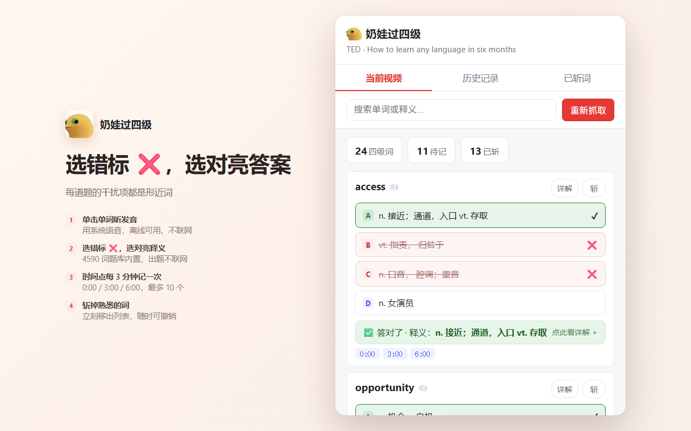
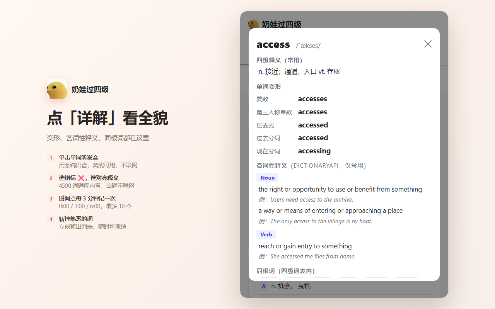
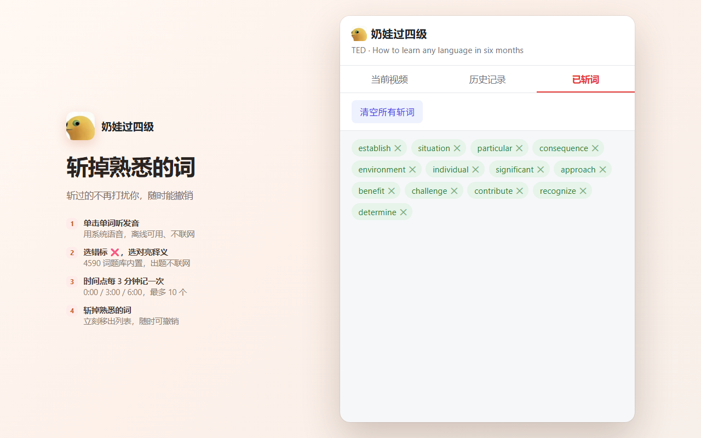

可惜看完就忘，一个都没留下。这个扩展帮你把它们捞出来。
播放视频时自动从字幕提取四级词汇。优先读取「沉浸式翻译」的双语字幕，没开也能抓 YouTube 原生字幕。
同一个词在 3 分钟区间内出现多少次都只记一次（0:00 / 3:00 / 6:00…），最多 10 个 —— 能定位原句，又不会把列表刷满。
不直接给中文释义：单击单词听发音，再从 4 个中文释义里选。选错标 ❌，选对才亮出答案。4590 词的题库全在本机，出题不联网。
认识？点一下「斩」，这个词立刻从列表里消失。越用越清爽，专注那些你还不熟的词。
单词变形（复数 / 过去式 / 过去分词 / 现在分词 / 比较级 / 最高级）本地秒出，各词性释义只留常用的。
本地词表 → Free Dictionary API → Wiktionary，遇到 404 也能查到词条。
纯只读监听页面字幕元素，不修改页面、不影响翻译扩展、不影响你看视频。
四选一记词、点开详解、斩词管理 —— 三张图看懂。



扩展还在开发者模式下加载（商店审核中），跟着下面做，五分钟搞定。
Code → Download ZIP，解压到任意目录。
chrome://extensions/；Edge 访问 edge://extensions/。
Immersive Translate，免费），让画面上出现英文 + 中文两行字幕。这步别跳过 —— 它决定了能不能抓到词。